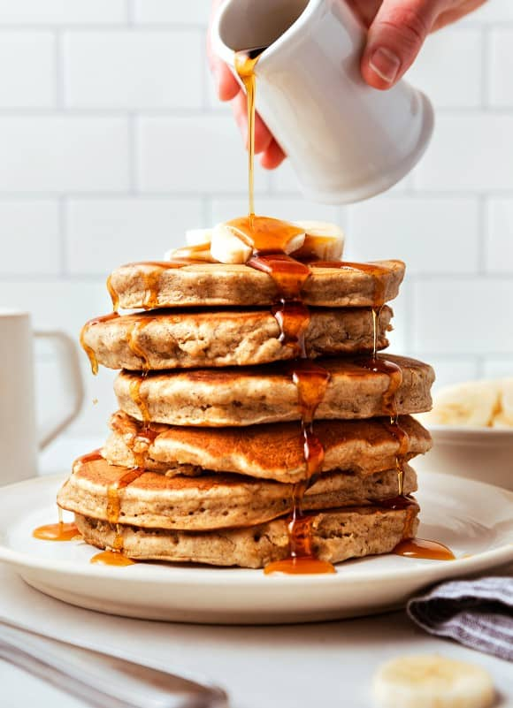

Banana Pancakes

About These Pancakes
These pancakes are thick, fluffy, and absolutely delicious! You'll be going back for seconds!
Making pancakes from scratch can seem daunting, but I promise you these are so easy you'll be making them all the time!
Ingredients
- 2 large ripe bananas
- 2/3 cups almond milk
- 1 tsp vanilla extract
- 1 egg
- 2 Tbls melted butter
- 1.5 cups flour
- 2 tsp baking powder
- .5 tsp baking soda
- 1 tsp pumpkin pie spice
Steps
- In a bowl mash the bananas and combine with the almond milk, vanilla extract, egg, and melted butter.
- In a separate bowl, whisk together the flour, baking powder, baking soda, and pumpkin pie spice.
- Pour the mashed banana mixture into the flour mixture and mix by folding until just combined. DO NOT OVERMIX.
- Heat a pan over medium heat. Once hot, add butter and batter. Cook a few minutes per side. It will vary between stoves.
- Remove from pan when fully cooked and serve immediately with syrup and your choice of toppings! Enjoy!
Back to Homepage